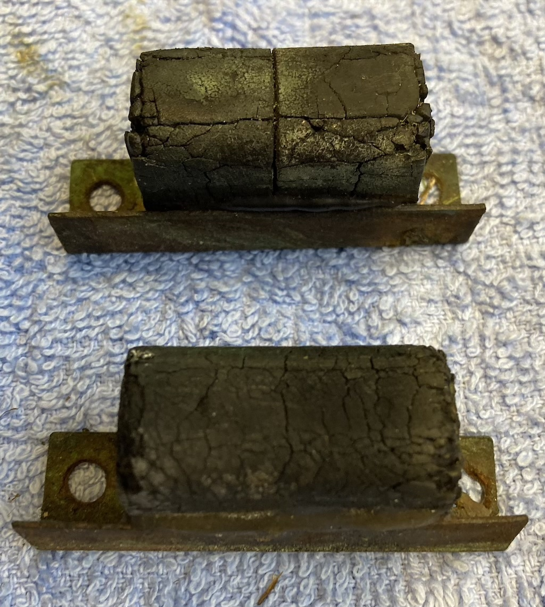
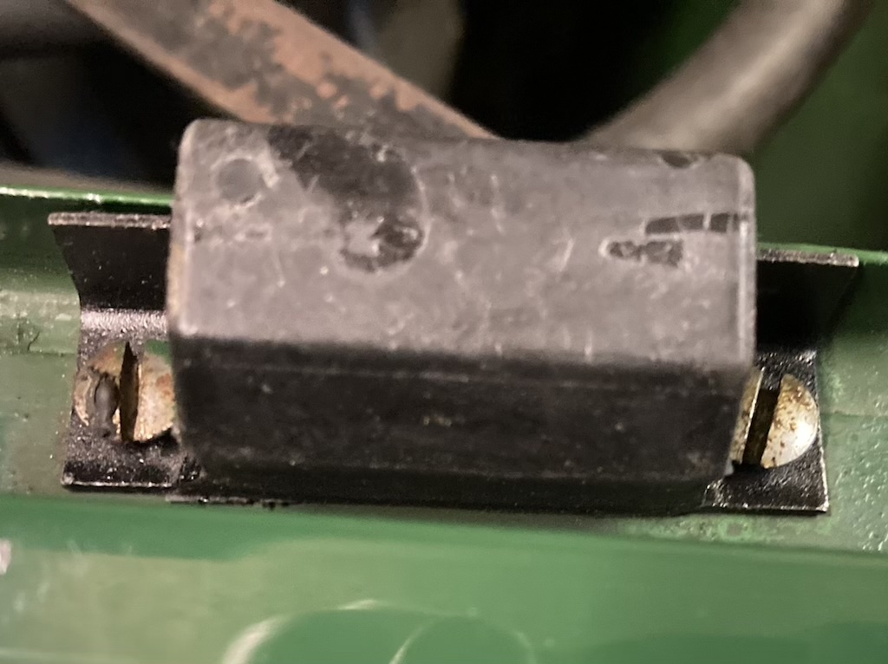
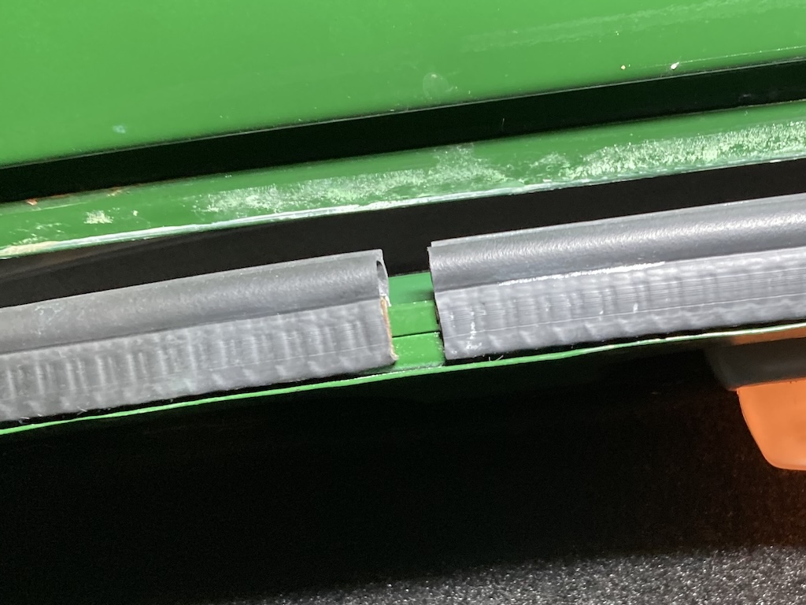
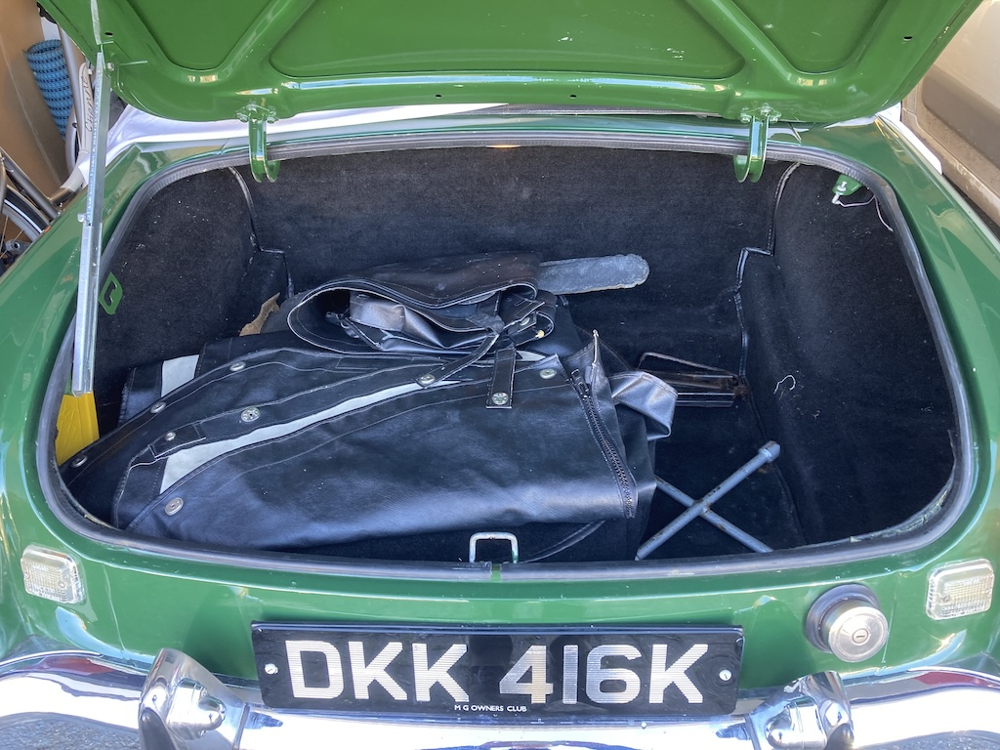
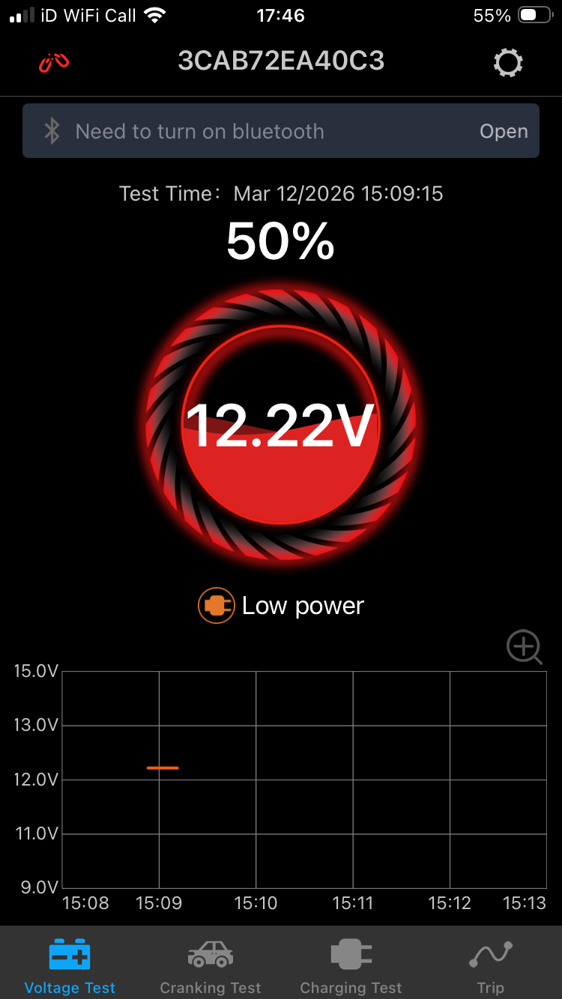
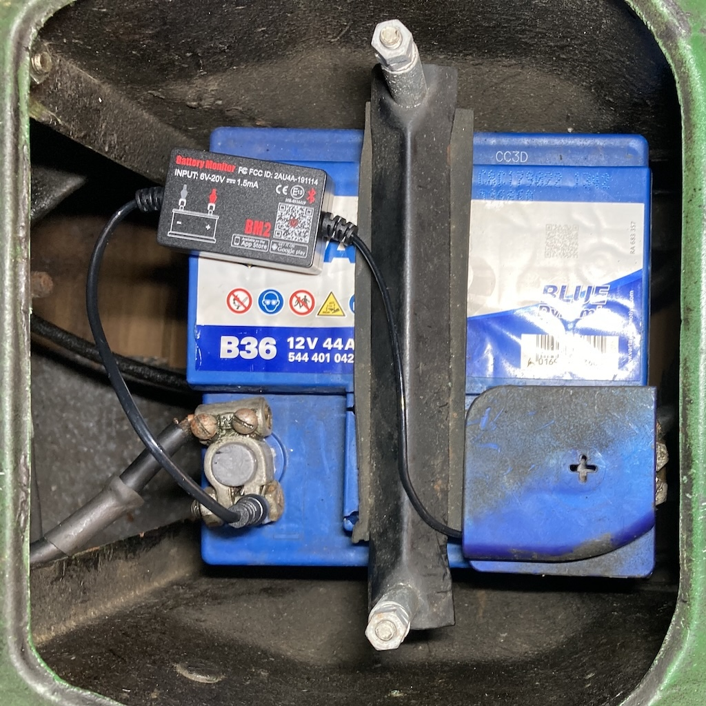
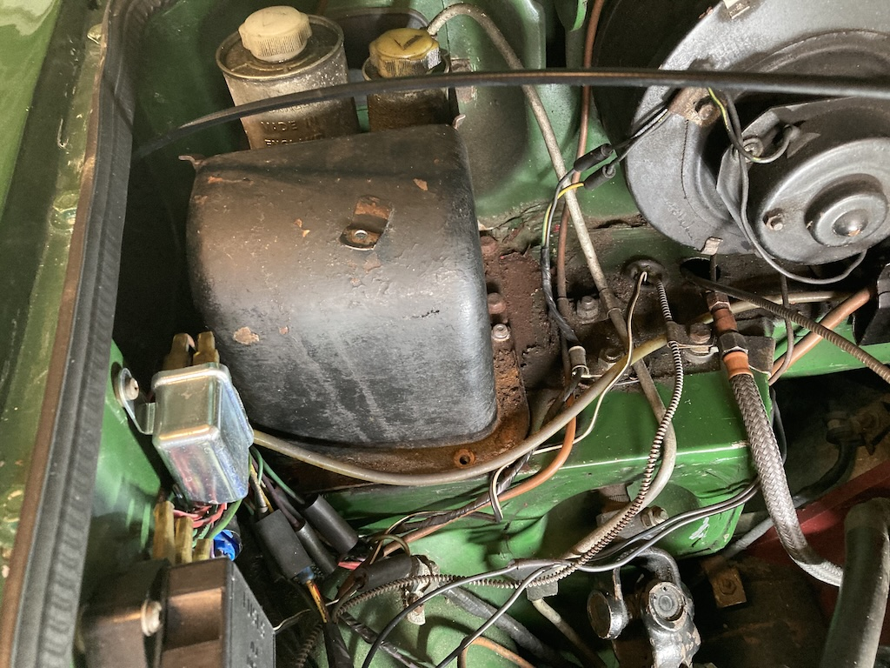
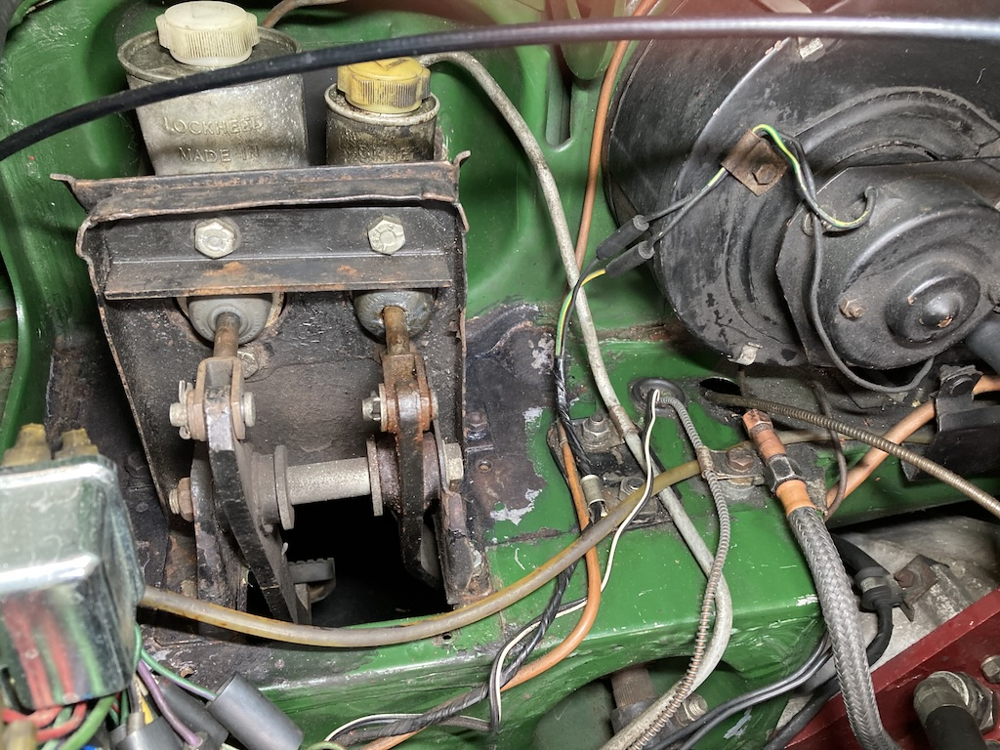
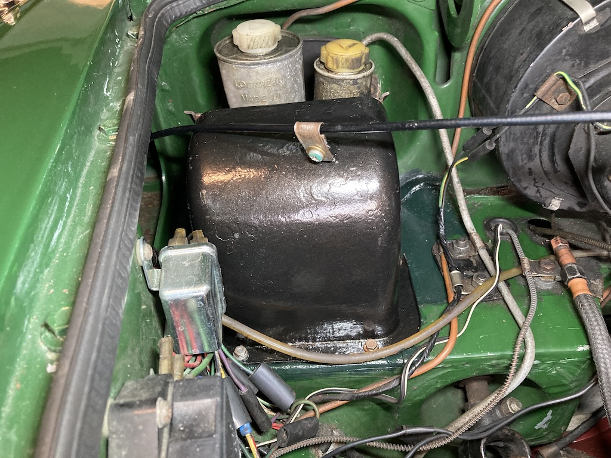

On any classic car there are always a number of small jobs that need to be done. DKK 416K is no exception. This page records these minor jobs.
Bonnet Rubbers

When I first bought DKK 416K I knew that the under-bonnet area was a bit grubby and the paint around the brake and clutch master cylinders had been removed, probably by spilt hydraulic fluid. The rubber seals around the bonnet were in good condition. However, the rubber 'stops', as can be seen in the photo, were hard and cracked.
This looked like a simple small job that could be done quickly, so I ordered new rubbers from the MG Owners Club.

Each block was held in place by two self-tapping screws, which were easy to remove. It was similarly easy to fit the two new blocks, although the holes in the near-side block did not quite line up with the holes in the wing. So I had to elongate the holes in the new block. The photo shows one on the new blocks in place.Boot Lid Seal

Within the page 'Some Details About DKK 416K' I noted that the boot lid seal had been fitted with a gap at the top and that this was a likely cause of dampness in the boot. So I removed the rubber seal, which seemed to be in good condition, and re-fitted it so that the gap was at the bottom.

I had to use a rubber hammer to knock the seal fully on to the metal edge so that the boot would close. I put a light inside the boot and could not see any light 'leakage' at the top when the lid was closed.Battery Monitor


The two 6V batteries have been replaced with a single 12V battery, mounted in one of the two battery boxes. The boxes are behind the seats and to access them you firstly need to remove the carpet and then remove the the top panel. So access is tricky. When I bought the car there was a cable attached to the battery and hanging out from under the cover. Obviously for plugging in a charger.For the moment (until I find a compatable plug) I've removed the cable, but fitted a battery monitor. The monitor fits across the battery terminals and communicates with an app on my iPhone using Bluetooth. The idea is that it will tell me if I need to put the battery on a trickle charger.
The noted 50% charge increased to 99% after only a 13 mile run. So the alternator seems to be working fine. However, I wonder what drain the immobiliser puts on the battery.
Pedal Box Rust

When I first inspected the car at Milestone Classics I noticed that someone had been a little slapdash with the brake and/or clutch fluid. The area around the pedal box, which is just in front of the master cylinders, was rusty, so clearly someone had spilt fluid, a known paint stripper, around that area.

So I removed the pedal box cover and scraped away as much of the paint and rust as I could, using a flat-blade screwdriver and a small wire brush. Access, particularly to the off-side of the box, was difficult, but I was able to vacuum out the bits and the dust, although I did wipe it all over with a rag dampened with white spirit so as to remove any lingering dust. Then I brushed into the area (using an old toothbrush) some Kurust, which turned the rust blue and then black after a few hours.
I also cleaned the inside and out of the pedal box cover and straightened the fixing point on its top. I had found the accelerator cable clip, which should have been fixed to the cover, loose around the cable when I removed the cover. I gave the cover the Kurust treatment before giving it three coats of black Hammerite from a spray can.I coated the now black metal around the pedal box with some dark green Hammerite paint. Again, access to the off-side of the box was difficult.
You can see from the photo that the Hammerite is much darker than the surrounding paint. My logic was that the Hammerite would resist any remaining rust and I can always over-coat it when I get some paint of the correct colour.